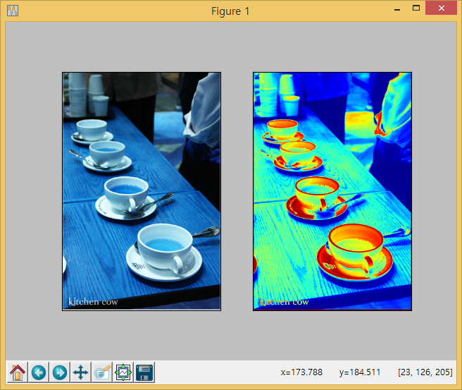

xwMOOC 고생대 프로젝트
이미지 한개 변환작업
이미지넷에서 받아온 이미지 파일 한개에 대해 명암단계(grayscale) 변환작업을 수행한다.

1. 코드 설명
- 변환 작업을 수행할 이미지 파일 선정
import os팩키지를 불러와서chdir메쏘드로 이미지 디렉토리로 이동한다.import glob팩키지glob메쏘드로tea디렉토리*.jpg파일에 대한 목록을 생성한다.- 8번째 이미지 파일을 특정한다.
import cv2팩키지imread메쏘드로 8번째 파일을 작업 파일로 불러와서orig_img로 저장한다.cv2.cvtColor(orig_img, cv2.COLOR_RGB2GRAY)명령어로 명암단계 변환작업을 수행하고gray_img객체로 저장한다.matplotlib팩키지로 하나의 화면을 두개로 쪼개 원본 이미지와 명암단계 변환한 이미지를 함께 창에 뿌려준다.
import cv2
import os
import matplotlib.pyplot as plt
import glob
## Select Image
os.chdir("tea")
jpg_files = glob.glob("*.jpg")
infile = jpg_files[7]
## Image Converstion
orig_img = cv2.imread(infile)
gray_img = cv2.cvtColor(orig_img, cv2.COLOR_RGB2GRAY)
## Matplotlib Viz.
plt.subplot(1,2,1)
plt.imshow(orig_img)
plt.xticks([]), plt.yticks([]) # Hide X and Y axis tick values
plt.subplot(1,2,2)
plt.imshow(gray_img)
plt.xticks([]), plt.yticks([]) # Hide X and Y axis tick values
plt.show()